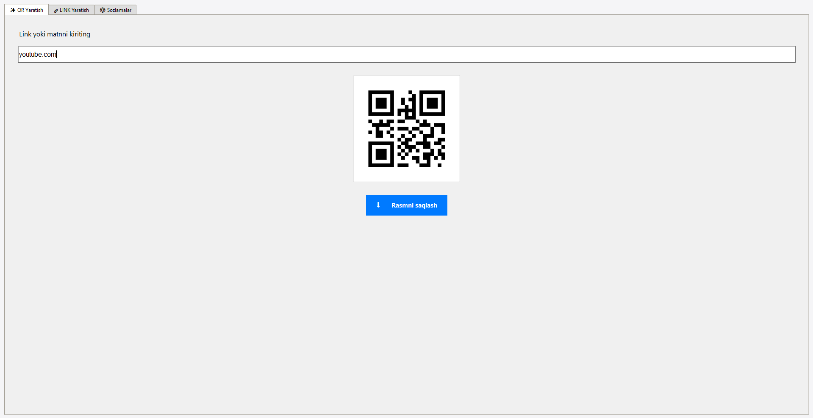
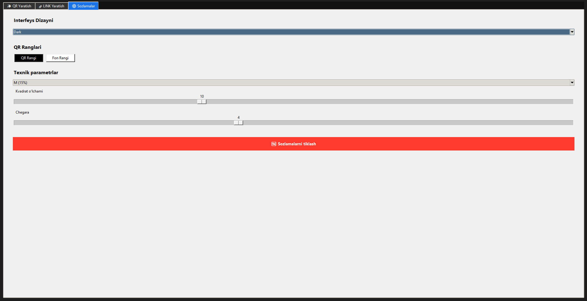
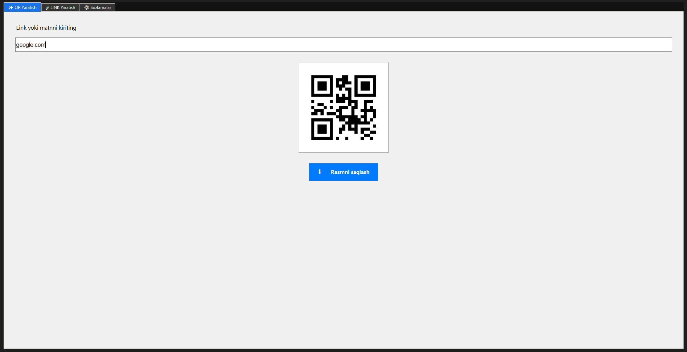
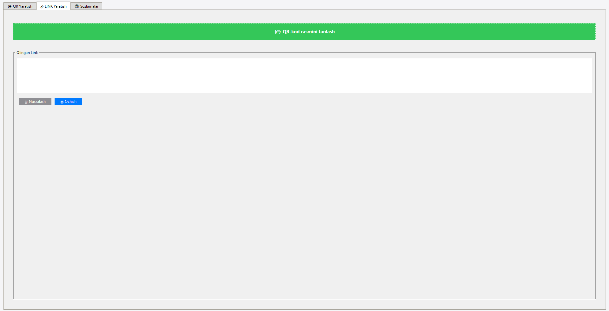

Matnlarni QR-kodga aylantiring, mavjud kodlarni skanerlang va interfeysni Dark/Light rejimlarida o'zingizga moslang.
Light va Dark mode ko'rinishlari

Asosiy menyu (Och rang)

Sozlamalar oynasi

Asosiy menyu (To'q rang)

Skanerlash bo'limi
Bir necha millisoniya ichida QR yaratish va skanerlash.
QR ranglarini va interfeys mavzusini o'zgartirish imkoniyati.
Barcha ma'lumotlar faqat sizning kompyuteringizda qoladi.